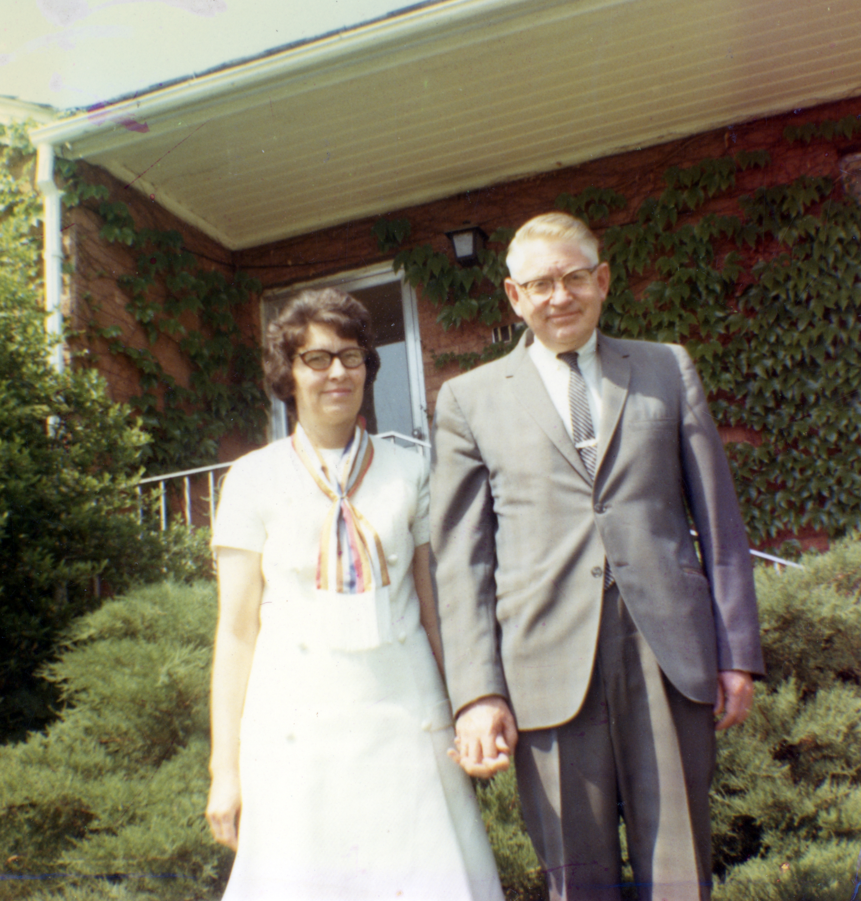

The Lynn & Donnelle Jensen Familiy
Family History
Vern H. Jensen
+
Barbara F. Ewell
Vern
→ Raised
Colorado
, died
SLC
Religious affiliation:
Mormon
26 September 1918 → 24 November 1980
Marriage to
Barbara
→ 27 March 1946
Childern, (ASK)
Extra
 When Vern Harmon Jensen was born on 26 September 1918, in Manassa, Conejos, Colorado, United States, his father, Oliver Exile Jensen, was 32 and his mother, Rosa Jane Sowards, was 27. He married Barbara Fae Ewell on 27 March 1946, in Salt Lake City, Salt Lake, Utah, United States. They were the parents of at least 1 son. He immigrated to World in 1941 and lived in Utah, United States in 1954 and Orem, Utah, Utah, United States in 1998. He died on 24 November 1980, in Salt Lake City, Salt Lake, Utah, United States, at the age of 62, and was buried in Provo, Utah, Utah, United States.